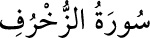

43- ZUHRUF SÛRESİ
Zuhruf, altın ve mücevher anlamına gelir.
Sûrede bunlardan söz edildiği ve
Allah’ın insana sahip olduğu altın ve
mücevherle değil, inanç ve davranışlarına göre
değer verdiği anlatıldığı için sûre bu adla anılmıştır.
Mekke’de inmiştir ve 89 âyettir.